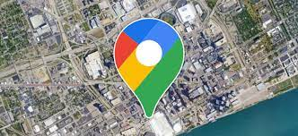
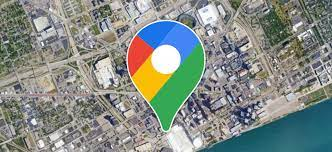

Follow us on our social media Platform
and Click on the maps Link for the address of the church
 

MFM Ministries is a full gospel ministry devoted to the Revival of Apostolic Signs,Holy Ghost fireworks and the unlimited demonstration of the power of God to deliver to the uttermost.
Absolute holiness within and without as the greatest spiritual insecticide and a pre-requisite for Heaven is taught openly. MFM is a do-it-yourself Gospel ministry where your hands are trained to wage war and your fingers to do battle.
At MFM, aggressive prayer is considered as an aid to spiritual focus and a check against being overwhelmed by the flesh. At MFM Prayer City, prayer goes on 24 hours a day, 7 days a week, non-stop.
What is an end-time church? An end-time church is a church where a sinner enters with two options: he either repents or does not come back, contrary to the present day church where sinners are comfortable and find things so easy and convenient.